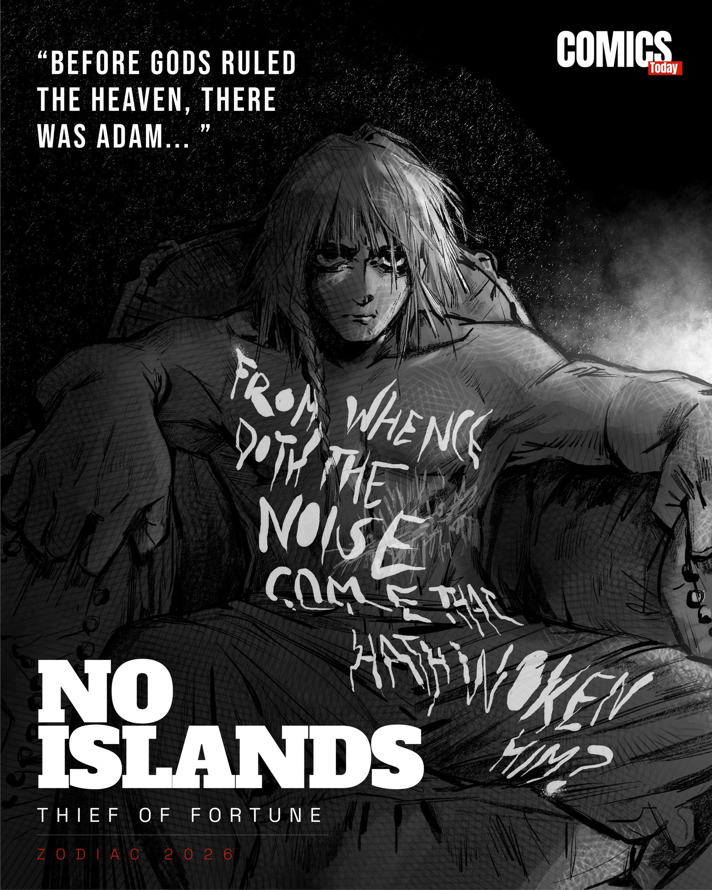
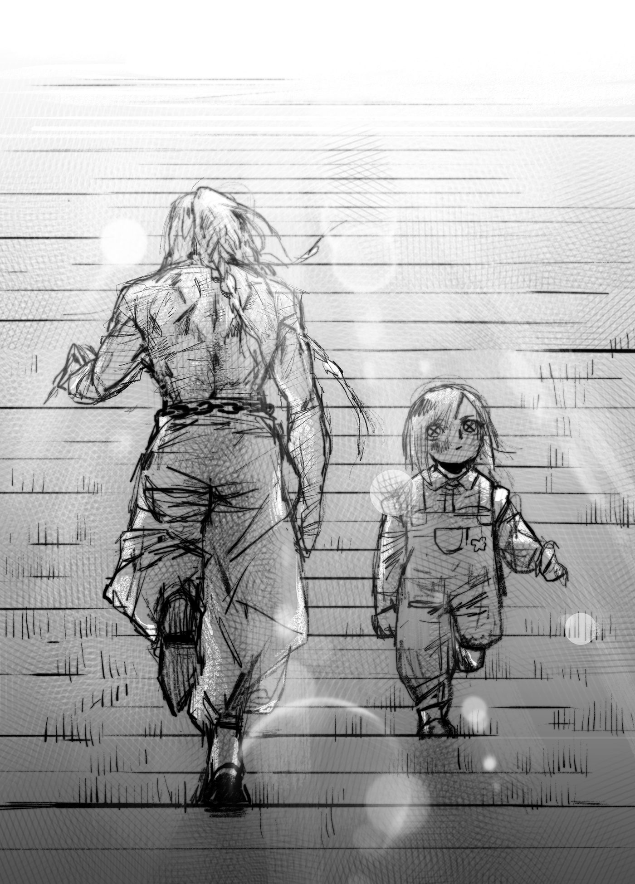
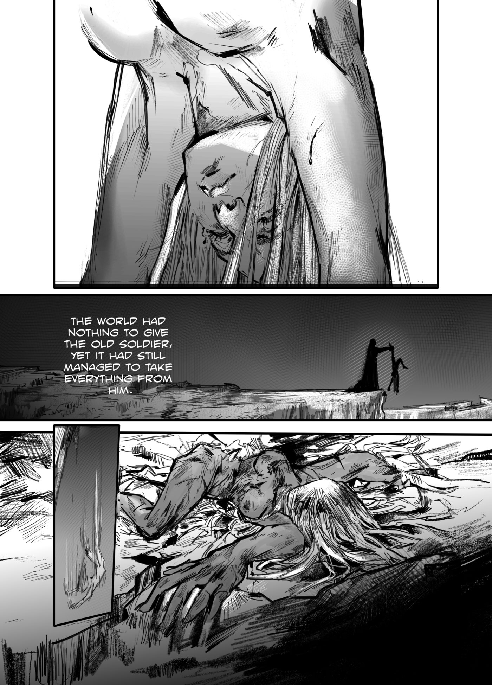
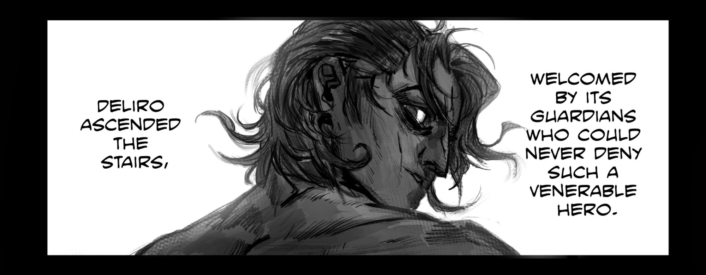

The Philosophy of Interdependence
A reference guide to the world of Ghara, the Heavens, and the lives caught between them.

The Philosophy of Interdependence
No Islands is built around a simple but powerful idea: no one exists alone. The title comes from the belief that every person is shaped by others — their pain, their choices, their love, and their consequences. In this story, no action happens in isolation. A broken man's anger creates a god, that god's existence ruins humanity, and another man's sacrifice reshapes the balance of the world. Every character is connected through cause and effect, making the title not just thematic, but structural to the narrative itself.
The story takes place in a world called Ghara, which is similar to Earth but exists as a separate realm with its own history. Alongside the mortal world exists another dimension known as the Heavens, where gods reside. The connection between these two realms is physical and known — there are stairways scattered across Ghara that lead directly to the Heavens.
Anyone who climbs these stairs to the top becomes a god. This idea removes mystery from divinity and turns it into something dangerously accessible, creating a world where the boundary between human and god is thin, but deeply consequential.

A Soldier's Wrath, A Girl's Burden
"His anger is not directed at a person… it is blind, aimed at the world itself."
At the center of the story is a broken soldier, often referred to as The Parent. He returns from war to find a world that has nothing left for him. His anger is not directed at a single person or system — it is blind, aimed at the world itself. In this state, he finds Badara, an orphan girl who has already suffered immensely and has nothing to lose. He takes her in, not out of compassion, but because she is easy to manipulate.
Over a few years, he shapes her into a tool for his revenge. Eventually, he performs a ritual in which he sacrifices his own life to bring her back stronger, setting into motion the events that define the entire story. Badara, after this transformation, becomes something far beyond human. She climbs the stairway to the Heavens and ascends into godhood, taking the name Ronbel, the Goddess of Fortune.
However, her transformation carries an unintended consequence — she begins absorbing the fortune of all humanity. Prosperity fades, suffering spreads, and the world of Ghara collapses into despair. Importantly, Ronbel is not driven by hatred or a desire to dominate. She simply wants to escape pain and live freely, but her very existence becomes a curse for everyone else. This makes her less of a villain and more of a tragic force whose presence disrupts the natural balance of the world.

Deliro Monasque and the Heavenly Order
As humanity suffers under this imbalance, another figure emerges — Deliro Monasque. Born as a half-Kruhind and half-human, he exists outside the system that Ronbel disrupts. The Kruhind are a powerful, semi-divine species exiled from the Heavens who now live among mortals and often dominate them. Because Deliro is not fully human, he is not affected by the loss of fortune in the same way others are.
Instead of using this advantage for himself, he makes a radical choice: he takes on all the suffering of humanity. In doing so, he becomes the God of Suffering, restoring balance to the world by countering Ronbel's control over fortune.
Surrounding them is a complex hierarchy of gods in the Heavens. At the top is Elha, the current Lord, who asserts authority over the other gods. Alongside him are figures like Pondrerer, an older and more passive observer, and Meyol, a former lord who once welcomed Ronbel before his death.
Unlike traditional divine beings, these gods are not necessarily wise or just — they often behave carelessly, almost like powerful beings without responsibility. Their existence reinforces the idea that power does not guarantee balance or morality.

The Unresolved Tension of Humanity
However, this restoration is incomplete. While suffering is absorbed by Deliro, fortune is still controlled by Ronbel and, by extension, the gods. The deeper problem remains unresolved — the fate of humanity is still not in human hands. This unresolved tension becomes the core conflict of the story, evolving into a philosophical clash between Ronbel and Deliro. Ronbel represents escape from pain, even if it harms others, while Deliro represents sacrifice and endurance, carrying the weight of the world without seeking recognition or reward.
The story is partially narrated through Angel, Deliro's daughter, who survives and carries forward his legacy. Through her perspective, the emotional weight of the story becomes more personal. She represents the continuation of the cycle — the next link in a chain of actions and consequences.
Her journey suggests that even after gods clash and sacrifices are made, the world continues to evolve through those who remain. In the end, No Islands is not just about gods, power, or conflict. It is about connection — how one person's pain can ripple outward and reshape entire worlds.
"No individual is ever truly separate from another."
"A layered universe where the boundary between human and god is a physical path."
No Islands is set in a universe divided between two connected realms — the mortal world called Ghara and a higher realm known as the Heavens. Ghara is similar to Earth, where humans live, struggle, and survive. However, this world contains a unique element: physical stairways that lead directly to the Heavens. These stairways are known to people, and anyone who climbs them completely becomes a god. This makes divinity accessible, but also dangerous, as it allows mortals to cross into a realm of immense power. The Heavens, on the other hand, are inhabited by gods who appear into existence rather than being born. They hold great power but lack responsibility, creating a fragile system where the balance between worlds can easily collapse.
The story begins with the people of Ghara, whose lives are shaped by suffering and circumstance. At the center is a broken soldier known as The Parent, who returns from war to a life that feels empty and meaningless. Driven by blind anger toward the world, he takes in an orphan girl named Badara, who has already experienced deep suffering. Instead of saving her, he shapes her into a tool for revenge. Through a ritual that costs him his own life, he transforms her into something beyond human. In contrast, Deliro Monasque represents a different path. Born half-human and half-Kruhind, he chooses empathy over anger. When the world begins to collapse, he sacrifices himself to carry the suffering of all humanity. His daughter Angel survives and becomes a witness to these events, representing the continuation of the story and the future of Ghara.
The Heavens are ruled by powerful but flawed gods who do not fully understand the consequences of their actions. At the top is Elha, the current Lord, who enforces control and rejects the idea of humans becoming gods. Alongside him is Pondrerer, the first Lord, who now observes rather than interferes, and Meyol, a former Lord who once welcomed change but is no longer present. Other gods, like Bail Ha, hold great power but avoid leadership. Unlike traditional divine beings, these gods are unpredictable and often careless, treating their power casually. Their detachment from suffering makes them dangerous, as their decisions directly impact the mortal world without them experiencing its consequences.
The Kruhind are a semi-divine species that were once part of the Heavens but were cast down to Ghara. They exist between mortals and gods, possessing strength and resilience that humans do not. Unlike humans, they are not affected by the loss of fortune, which allows them to thrive when humanity suffers. As the balance of the world breaks, the Kruhind rise in power, dominating and exploiting humans. They are not just enemies, but a reflection of imbalance — showing what happens when power exists without limitation and when one group gains advantage over another.
The world of No Islands is governed by two opposing forces — fortune and suffering. When Badara ascends to the Heavens and becomes Ronbel, the Goddess of Fortune, she begins absorbing the fortune of all humanity. This causes the mortal world to fall into despair. In response, Deliro takes on all suffering, becoming the God of Suffering and restoring balance. However, this balance is not natural. Both forces are controlled by individuals rather than existing freely, making the system unstable. As long as fortune and suffering remain in the hands of gods, humanity's fate is never truly its own.
Held by Ronbel. Drained from humanity, hoarded in the Heavens.
Carried by Deliro. Absorbed in silence, restoring a fragile balance.
At the heart of the story is the clash between Ronbel and Deliro. Ronbel seeks freedom from pain and chooses to live without suffering, even if it harms the world. Deliro, on the other hand, accepts suffering and carries it for others. Their conflict is not just physical, but philosophical. It raises a deeper question — should humanity depend on gods to control its fate, or should it find balance on its own? This tension drives the story forward and determines whether the world can ever truly be stable.
Beyond Ghara and the Heavens exists a larger universe filled with other beings and forces. The most important among them is The Chalice, a higher form of divinity that exists within Adam, the first man. Adam lives far from the main conflict, often asleep, while The Chalice observes everything without direct interference. Alongside him is Uriel, an angel who protects him and the space they inhabit. There are also distant observers — warriors, gods from other mythologies, and unknown beings — who watch the events unfold. Their presence shows that the story is not isolated, but part of a much larger cosmic system.
No Islands is a dark and philosophical story that explores pain, sacrifice, and connection. It moves between large-scale cosmic events and deeply personal human struggles. There are no clear heroes or villains — only individuals shaped by their experiences and choices. Every action has consequences, and every act of power affects others. At its core, the story reminds us that no one stands alone. Every life is connected, and every decision creates ripples that shape the world.
The People Who Bear the Consequences
Ghara is not just a setting — it is where the emotional weight of No Islands truly lives. The characters who belong to this world are not defined by power, but by suffering, survival, and choice. Unlike the gods in the Heavens, who often act without consequence, the people of Ghara are the ones who feel every shift in fortune and every imbalance in the universe. Their lives are directly shaped by forces beyond their control, yet it is their decisions that ultimately drive the story forward.
HIERARCHY LEVEL: 01 // THE ARCHITECT
At the center of Ghara's narrative is The Parent, a war-torn soldier who returns to a life that no longer has meaning for him. His story is not one of grand villainy, but of quiet collapse. He represents a man who feels abandoned by the world, and in that emptiness, he sets off a chain reaction that the world cannot contain.
HIERARCHY LEVEL: 02 // THE ASCENDANT
The Product of Ghara's Cruelty
Badara, before becoming Ronbel, embodies the raw pain of Ghara. She is not driven by revenge or ideology; she simply wants relief from a life filled with suffering. This makes her transformation deeply tragic. Even when she ascends and leaves Ghara behind, her origins remain rooted in it — she is a product of its cruelty, and in many ways, her existence reflects it back onto the world.
HIERARCHY LEVEL: 03 // THE PEAK POWER
The Moral Counterpoint
In contrast to both of them stands Deliro Monasque, a figure who represents a different response to suffering. Born between two worlds — human and Kruhind — he exists slightly outside the rules that govern others. While he could have chosen to rise above humanity's struggles, he instead chooses to carry them.
His life in Ghara, including his family and children, grounds him in something deeply human. His eventual sacrifice is not born from anger, but from empathy, making him the moral counterpoint to both The Parent and Badara.
HIERARCHY LEVEL: 04 // THE WITNESS
The Evolution of the Cycle
Finally, there is Angel, Deliro's daughter, who serves as both witness and continuation. Through her, the story of Ghara does not end with sacrifice — it evolves. She carries the memory of what was lost and the weight of what remains unresolved. In many ways, she represents the future of Ghara, shaped by everything that came before her.
"Together, these characters define Ghara as a world where people are not isolated individuals, but interconnected lives — each one influencing the fate of the others, whether they realize it or not."
NO ISLANDS // VOLUME 1
This guide is just the beginning. Read the full story.
Buy Issue 01